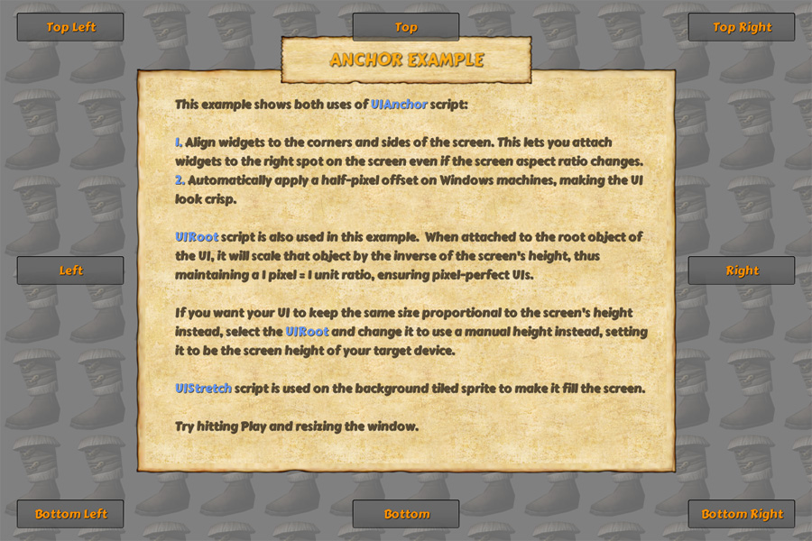

このExampleは、NGUIの一番重要なスクリプトの一つ「UIAnchor」です。シンプルなフォームで、このスクリプトは、それに接続されたゲームオブジェクトを自動的に配置するのに使用します。このスクリプトにはいくつかの用途があります：
UIRoot スクリプトもこのExampleで使用されています。UIRootオブジェクトにアタッチすると、それは、このようにpixel-perfectなUIを確保し、1ピクセル = 1を維持し、画面の高さの逆数でそのオブジェクトをスケーリングします。0の値は動きが無いことで、0.25の値は、幅か高さの+25％を意味する（それがXかYかに応じて）、など、相対座標に基づくオブジェクトの位置にUIRootを使用することもできます。
UIStretch スクリプトもTIledSpriteにの背景にアタッチされて使用されています。このスクリプトはスクリーンのサイズにあわせてウィジットを引き伸ばすことが出来ます。
※Unityの現在の動作は、ゲームウィンドウの寸法を変更すると、編集モードでは、スクリプト上のアップデートをトリガしないことにご注意下さい。つまり、何か変更したりPlayを単に押す（または[Ctrl] + [S]キーを単に2回押す）までUIが正しく更新されません。Playモードのとき、すべてが期待どおりに動作します。
| [1] | 【訳注】原文のofsettingはoffsettingだと思います。 |
| [2] | 【訳注】原文のscrispは不明 |